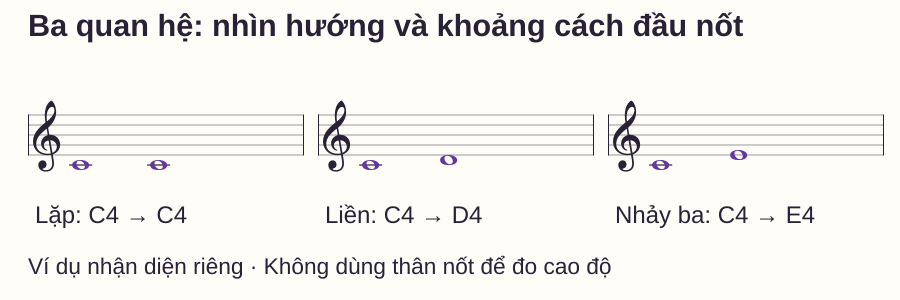
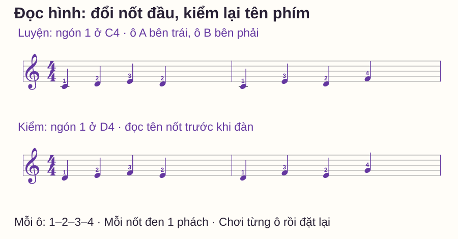

Đọc nhạc
Đọc bước liền và bước nhảy trên sheet piano cho người mới
# Đọc bước liền và bước nhảy trên sheet piano cho người mới
Bạn đã tìm được nốt đầu, nhưng đến nốt thứ hai lại quay về đếm khuông từ đầu. Trong nhiều câu ngắn, nhìn hướng đi và khoảng cách giữa hai đầu nốt sẽ cho thêm một cách đọc: lặp lại, đi liền hay bỏ qua một tên nốt.
Bài này chỉ tập ba chuyển động nhỏ và kiểm chúng bằng mẫu đổi nốt bắt đầu. Bạn sẽ gọi đúng tên nốt trước, rồi đàn trong vùng năm phím; chưa cần học toàn bộ quãng hoặc chuyển giọng.
Trả lời nhanh
Đọc quãng bắt đầu bằng việc xác định đúng nốt đầu, sau đó nhìn nốt tiếp nằm cao hơn, thấp hơn hay ngang mức. Trong mẫu phím trắng của bài, bước liền là chuyển sang tên nốt kề nhau, như C–D; trên khuông là dòng sang khe sát bên hoặc ngược lại. Bước nhảy quãng ba bỏ qua một tên nốt, như C–E; trên khuông là dòng sang dòng kế hoặc khe sang khe kế. Nốt lặp giữ nguyên vị trí cao độ. Hãy kiểm cả hướng và khoảng cách, rồi đối chiếu tên nốt, dấu hóa và vùng đàn; hình chuyển động riêng lẻ chưa đủ để xác định mọi phím.
Ý tưởng cốt lõi: đọc quan hệ nhưng giữ điểm xuất phát
Hai câu C4–D4–E4–D4 và D4–E4–F4–E4 có cùng kiểu chuyển động: lên liền, lên liền, xuống liền. Chúng không có cùng cao độ và khoảng cách nửa cung không giống ở mọi bước. Nếu chỉ nhìn hình rồi mặc định bắt đầu bằng C4, bạn sẽ chơi sai cả câu thứ hai.
Piano Adventures đề cập việc đọc đường giai điệu qua hướng và bước liền/bước nhảy cùng với nhận nốt. Trong bài này, ta giới hạn phạm vi để kiểm được từng quan hệ bằng mắt, lời nói và phím đàn.
C là Đô, D Rê, E Mi, F Fa, G Sol, A La, B Si; C4 là Đô giữa. Khóa Sol đặt G4 trên dòng thứ hai từ dưới. Các ví dụ dùng phím trắng, không dấu hóa. Muốn ôn điểm xuất phát, xem nốt mốc piano, hoặc nhận riêng C4 ở dòng phụ đầu dưới khuông Sol.
Ba hình cần nhận trên khuông

| Quan hệ | Trên khuông | Trên phím trắng của mẫu |
|---|---|---|
| Lặp | Hai đầu nốt cùng vị trí | C4 → C4: đánh lại cùng phím |
| Liền lên/xuống | Dòng ↔ khe sát bên | C4 → D4 hoặc D4 → C4 |
| Nhảy quãng ba lên/xuống | Dòng ↔ dòng kế; khe ↔ khe kế | C4 → E4 hoặc E4 → C4 |
“Bước nhảy” trong bài chỉ là quãng ba. Những bước nhảy lớn hơn cần đọc số quãng cụ thể, không áp cùng một khoảng cách. Nếu đầu nốt không đúng một trong ba hình, hãy dừng và xác định lại thay vì đoán.
Quãng ba có phải luôn là bốn nửa cung?
Không. Số quãng đếm cả hai tên nốt đầu và cuối: C–D–E là ba nên C–E là quãng ba; D–E–F cũng là quãng ba. C–E tự nhiên có bốn nửa cung, còn D–F tự nhiên có ba. Quãng có số và tính chất; OpenLearn — Intervals giải thích sự phân biệt này.
Vì vậy, đừng biến mẹo nhìn hình thành công thức “mọi quãng ba đều bỏ cùng số phím đen”. Trong phạm vi mẫu không dấu hóa, đi theo đúng tên phím trắng là đủ; ở bản khác, đọc hóa biểu và dấu hóa trước khi chọn phím.
Từng bước đọc một câu bốn nốt
1. Khóa đúng nốt đầu
Gọi cả tên và quãng tám. Tìm C4 hoặc D4 trên đàn trước, chưa chạy cả câu. Nếu nốt đầu chưa rõ, dùng mốc và vị trí dòng/khe để kiểm.
2. Nói ba chuyển động
Với C4–E4–D4–F4, nói “nhảy lên, liền xuống, nhảy lên”. Mỗi từ phải chỉ một cặp liên tiếp. “Câu đi lên” quá chung vì có một bước xuống ở giữa.
3. Gọi lại tên nốt để kiểm chéo
Đi từ điểm xuất phát theo từng chuyển động rồi đối chiếu đầu nốt. Nếu hình và tên không khớp, tìm chỗ lệch trước khi đàn. Số ngón gợi ý giúp thực hiện mẫu, không phải chứng cứ rằng bạn đã đọc đúng sheet.
4. Thêm thời gian sau khi đường đi đã rõ
Các mẫu dưới có bốn nốt đen trong 4/4: mỗi nốt một phách. Chơi và nhả nốt trước khi sang nốt kế, không pedal; không cần tạo khoảng nghỉ giữa các nốt. Với nốt lặp, nhả phím đủ để phím trở lên rồi đánh lại ở phách kế.
Bài tập: cùng tầm tay, hai kiểu chuyển động

| Mẫu | Bốn nốt ở phách 1–2–3–4 | Ngón phải | Ba chuyển động |
|---|---|---|---|
| A | C4–D4–E4–D4 | 1–2–3–2 | Liền lên, liền lên, liền xuống |
| B | C4–E4–D4–F4 | 1–3–2–4 | Nhảy lên, liền xuống, nhảy lên |
Ngón 1 cái, 2 trỏ, 3 giữa, 4 áp út, 5 út. Đặt tay phải trong vùng C4–G4; chưa dùng tay trái. Mỗi mẫu là một ô độc lập, kết thúc rồi đặt lại tay, không bắt buộc nối A và B ngay.
Gọi tên và ba chuyển động một lượt; gõ bốn phách một lượt; sau đó đàn mỗi mẫu hai lượt. Có thể thử 50 phách/phút, một click mỗi phách, đếm một ô chuẩn bị. Nếu phải dừng tìm phím, hạ tốc độ hoặc đọc từng cặp trước. Nốt cuối ở phách 4 nhả tại số 1 tiếp theo, không nhả ngay sau tiếng đánh.
Tự kiểm bằng cách đổi nốt đầu
Che bảng tên nốt, đọc hai ô hàng dưới của hình. Đặt ngón 1 tay phải lên D4, tay trong vùng D4–A4. Đừng dịch chuyển một câu đã thuộc bằng cảm giác; chỉ từng đầu nốt, gọi tên rồi nói ba chuyển động.
Mở đáp án hai mẫu hàng dưới
Mẫu A mới: D4–E4–F4–E4, ngón 1–2–3–2. Mẫu B mới: D4–F4–E4–G4, ngón 1–3–2–4. Cả hai ô đều có bốn nốt đen, mỗi nốt một phách. Mẫu A có ba bước liền; mẫu B là nhảy lên, liền xuống, nhảy lên.
Sau đó thử câu chữ E4–E4–G4–F4, bốn nốt đen, tay phải trong E4–B4, ngón 1–1–3–2. Gọi quan hệ trước khi đàn: lặp, nhảy lên, liền xuống. Câu chữ này kiểm việc hiểu khái niệm; nó không thay một phép đọc sheet mới chưa biết đáp án.
Lỗi thường gặp và phép sửa
| Biểu hiện | Nguyên nhân cần kiểm | Thử sửa |
|---|---|---|
| Chơi C–D khi sheet là C–E | Chỉ nhìn hướng, bỏ khoảng cách | Chỉ vị trí D nằm giữa hai đầu nốt C/E |
| Mẫu D4 vẫn bắt đầu bằng C4 | Nhớ ngón mà chưa khóa nốt đầu | Gọi D4 và tìm phím trước khi đặt ngón 1 |
| Thấy hai nốt trên dòng liền nhau và gọi quãng hai | Đếm số dòng thay vì tên nốt | C–D–E tính cả hai đầu: quãng ba |
| Mẫu lên đúng, mẫu xuống sai | Chưa kiểm hướng ở từng cặp | Đọc ngược riêng E–D rồi nối C–E–D |
| Cùng hình mà luôn dùng cùng số nửa cung | Nhầm số quãng với tính chất | So C–E và D–F trên đàn, gọi rõ các tên |
Routine mười phút và điều kiện học tiếp
- 0–2 phút: chỉ ba cặp trong hình, nói lặp/liền/nhảy và hướng.
- 2–4 phút: đọc A/B bằng tên nốt và chuyển động, chưa đàn.
- 4–6 phút: gõ rồi đàn từng ô, hai lượt có đặt lại.
- 6–8 phút: thử hai ô bắt đầu D4 trước khi mở đáp án.
- 8–10 phút: sửa một lỗi, nghỉ ngắn và thử câu có nốt lặp.
Đủ sẵn sàng mở rộng khi bạn đọc đúng cả tám nốt của hai mẫu bắt đầu ở D4, nói đúng cả sáu chuyển động và chơi mỗi ô đủ bốn phách ở tốc độ phù hợp. Sau nghỉ, dùng mẫu khác cùng tầm để kiểm lại; thuộc hai mẫu này chưa chứng minh đọc được mọi sheet.
Muốn ghép các thông tin lại, xem cách đọc nốt nhạc piano. Nếu khó ở điểm xuất phát, ôn khóa Sol; nếu đường đi đã đúng nhưng thời gian chưa đều, xem phách và tiết tấu.
Khi chuyển từ đọc một tay sang phối hợp, dùng phép kiểm tập riêng và ghép tay để xác định đoạn nào cần sửa trước.
Câu hỏi thường gặp
Bước liền có nghĩa là luôn đi một cung không?
Không. E–F trên phím trắng là nửa cung, C–D là một cung; cả hai vẫn là bước liền theo tên nốt trong mẫu này.
Hai nốt cùng dòng có luôn là nốt lặp không?
Chúng có cùng vị trí tên nốt trong cùng khóa, nhưng phải kiểm dấu hóa. Một dấu hóa mới có thể đổi cao độ dù đầu nốt vẫn cùng dòng.
Có cần biết tên từng nốt khi đã nhìn được hình không?
Nên kiểm cả hai. Đọc hình giúp nhận quan hệ; nhận nốt và vùng đàn giúp đặt đúng điểm đầu và phát hiện lệch cả câu.
Quãng ba phải chơi bằng ngón 1 và 3 không?
Không. Ngón tùy câu và vị trí. Bài dùng 1–3 để giảm nhiệm vụ trong vùng năm phím, không đặt quy tắc cho mọi quãng ba.
Cách đọc này có dùng cho khóa Fa không?
Có. Hình dòng/khe của bước liền và quãng ba tương tự, nhưng tên nốt theo khóa Fa khác. Hãy khóa nốt đầu ở khóa đó trước.
Tôi có nên nhìn trước cả ô nhịp không?
Có thể quan sát cả ô để nhận hình, nhưng khi còn mới hãy xác định từng cặp chắc trước. Bài không yêu cầu tốc độ hoặc số nốt nhìn trước cố định.
Nguồn và ghi chú biên soạn
- Open University — Intervals: số và tính chất của quãng.
- Piano Adventures — Approach to Reading: kết hợp nhận nốt với đường giai điệu. Nguồn được kiểm ngày 27/10/2026.
- Hình, mẫu luyện và kiểm tra do website biên soạn; lịch và tiêu chí là gợi ý thực hành, chưa được kiểm nghiệm với học viên.